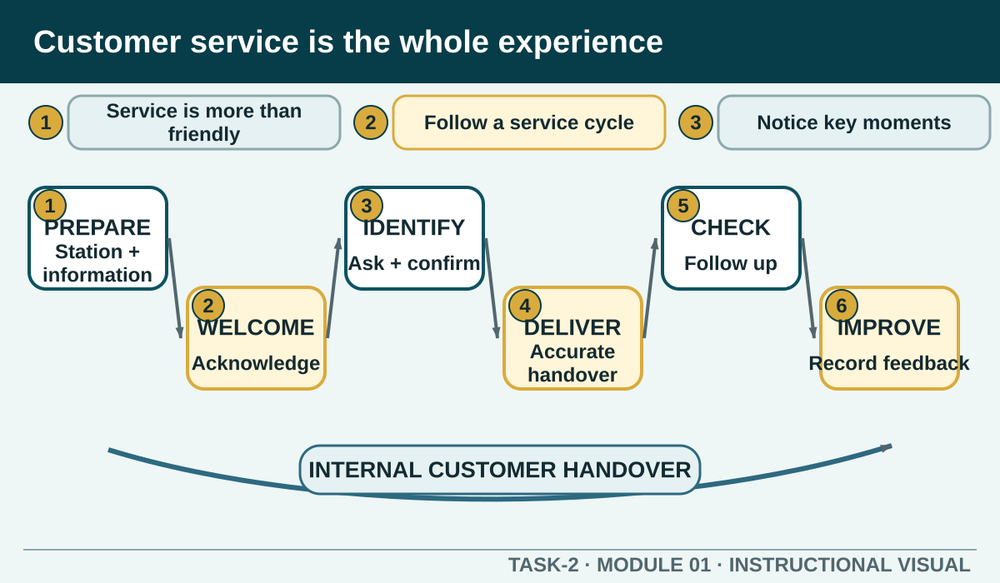

Prior learning
Students can identify basic hospitality roles and communicate using respectful workplace language.
Task 2 · Lesson 1 of 8
Build a service mindset by tracing what customers and colleagues experience before, during and after a hospitality transaction.
Prior learning
Students can identify basic hospitality roles and communicate using respectful workplace language.
Success criteria
Learning boundary
This lesson supports preparation and formative practice. The current authorised package and trainer/assessor control formal products, observations, dates and submission.

Customer service is the interaction and support a business provides before, during and after a customer receives a product or service. In hospitality, the experience begins before the first order: the venue is presented, information is available and the customer is acknowledged. It continues through questions, ordering, production, delivery, checking satisfaction and responding if something changes.
Friendly language matters, but it cannot carry the whole experience. A warm greeting followed by an inaccurate order is not strong service. A correct meal delivered without acknowledgement, explanation or follow-up can also feel poor. The service mindset is to notice the complete experience and the effect of every handover.
Use a cycle so that service does not stop at taking the order. The exact local procedure may differ, but a useful learning sequence is prepare, welcome, identify, deliver, check and improve. Each stage gives the next worker reliable information and gives the customer a clear next step.
Customers notice what staff do and what the environment communicates. Presentation of the venue, staff, menus or promotional material and food or beverages all contribute. So do prompt acknowledgement, product knowledge, accuracy, attention to detail, personalisation and problem resolution.
A useful way to evaluate service is to compare the visible action with its likely effect. Ignoring an arriving customer creates uncertainty. Acknowledging them and explaining the next step creates confidence. Guessing an answer creates risk. Seeking authorised information creates trust even if it takes slightly longer.
Worked Example
An external customer receives the venue's product or service. An internal customer is a colleague or work area that needs accurate information, materials or action from another part of the business. The kitchen needs a clear docket. Floor staff need an accurate delay update. The next shift needs a useful handover.
Poor internal service becomes visible to the external customer. An unclear modification, missing table number or unreported shortage can produce a wrong order, delay or conflict. Treating colleagues as customers of your information encourages clear records, respectful questions and closed-loop communication.
Good service helps customers feel welcomed, informed and confident. It can support repeat business, constructive feedback and a positive reputation. Poor service can create rework, waste, complaints, loss of trust and extra pressure on colleagues.
The aim is not to guarantee that every customer will be happy. Staff cannot control every delay, preference or reaction. They can control whether they listen, record accurately, communicate honestly, act within authority and seek help when needed.
A table orders two meals. The worker records and repeats both orders. The kitchen later advises that one item will be delayed. The worker checks the authorised information, updates the table without blaming another work area and asks whether the customer needs assistance. When the meals arrive, the worker confirms the items and later checks satisfaction.
The key is continuity. The delay itself may be outside the worker's control, but accurate handover, an honest update and follow-up protect the service experience. If the customer raises a complaint, the worker listens and uses the authorised recovery process rather than making an unsupported promise.
Formative practice
Each option explains the workplace consequence. These responses save on this device.
Written application
Use the six service-cycle stages as headings. Describe observable actions rather than guessing what a person felt.
Self-checkApply and keep evidence
Judge observable service behaviours against a clear, neutral service standard.
Use the check result, activity record and written response as formative learning evidence only. Formal evidence remains controlled by the current package and trainer/assessor.
Authorised source note: Grounded in T2-S01, T2-S02 and the v2 service-cycle language in T2-S10. Examples are fictional practice, not current assessment conditions.